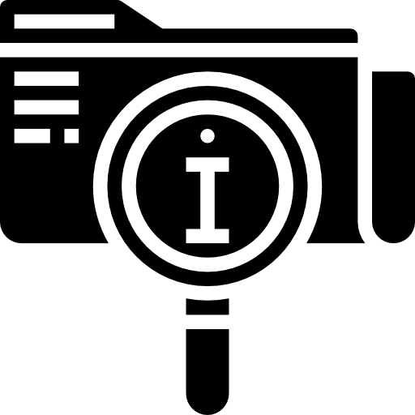

- 
-

Es una de las agrupaciones de centenares de mujeres campesinas artesanas que se desenvuelve en la ciudad de Potosí, cuya fuente de ingreso se halla en el hilado y tejido a mano de la fina lana de sus ovejas, llamas y alpacas. Trabajo que les permite, además de mejorar la economía de sus hogares (muy pobres), revalorizar su cultura y elevar su autoestima.
El departamento de Potosí es famoso por sus recursos minerales, sin embargo, es uno de los departamentos más pobres de Bolivia, sus habitantes subsisten en condiciones muy precarias. “El Molino”, ubicado en este departamento (Potosí), es un centro parroquial compuesto por las 30 comunidades más pobres del mundo . Es una región a 4000 metros de altura, cuyas condiciones climáticas son hostiles, carecen de una buena infraestructura caminera y de medios de comunicación. La región está organizada en ayllus (forma de comunidad andina) y todavía mantiene vestigios de las culturas quechua y aimara, motivo por el cual el centro de capacitación campesina “El Molino” promueve, con mucho éxito, la recuperación de las formas de expresión propias del lugar. Una de ellas es el arte textil.
En los textiles aimaras, como en su arquitectura, aparece el águila bicéfala (símbolo de la casa de Austria que pervivió pese al cambio de dinastía) otra figura es la del mono, que era conocido como Dios de las construcciones y edificios. Pero un elemento mítico que se creía puramente occidental, es la figura de la “sirena”, que está relacionada a las leyendas del lago Titicaca. Sobrevive como elemento de la arquitectura, la tapicería y el cumbis.
Los antepasados andinos vibran a través del textil. No hay un punto concreto de inicio, lo cierto es que los pueblos indígenas se relacionaron para influenciarse entre si, se alimentaron de símbolos, de creencias míticas y religiosas, de costumbres, sueños, misterios, del devenir diario y de los procesos de cambio. La textilería refleja el encuentro con otras culturas, el sometimiento al dominio español y la permanencia de un lenguaje propio que si bien admitió elementos extranjeros conservó la esencia, por lo tanto se dice que en la técnica y en el arte del tejido indígena, existen “reminiscencias anteriores y añadidos posteriores”. Las primera influencia del textil empezó mucho antes de la llegada española En todo el territorio antes mencionado existían etnias como los Lupacas, Chillacas, Urus, Charcas, Caracaras, los Chichas, Mitmas, Callawayas y otras tantas. En permanente contacto se influenciaron entre si, combatieron unas con otras y algunas se integraron a grupos más grandes. Elementos que se distinguen en el textil
• Telar
• Hilo Mouline, nylon, u otro
• Cuentas de colores
• Aguja de enfilado
• Cierre para pulsera
• Tijeras
• Pegamento (opcional)
1. Se fijan los hilos base en el telar. Debe colocarse un hilo más que el número de cuentas que vayamos a poner en cada vuelta. El ejemplo tiene 8 cuentas y 9 hilos. Fijar los hilos a los tornillos de los cabezales del telar con nudos, de modo tal que queden paralelos y tensos. Al final se pueden tensar un poco más girando los rodillos de las puntas. 2. Enhebramos las cuentas y podemos dejar sin rematar el extremo para atar al final o anudarlo sobre el hilo del borde del telar. Se puede poner pegamento en el orificio de las cuentas de los extremos, pero eso al final de la fila, cuando ya no pasaremos más hilos por ellas. 3. Pasamos el hilo con las cuentas por debajo del telar, de modo que cada cuenta quede en el hueco entre hilos. Luego lo empujamos hacia arriba, y con la aguja todavía enhebrada, pasarla por la parte superior de las cuentas, de modo de asegurarlas al telar. 4. Repetir el procedimiento para cada fila de cuentas. 5. Para el diseño, se va cambiando la disposición de las cuentas de modo que formen un zigzag. Pero puede elegirse cualquiera que la imaginación encuentre. 6. Se sigue hasta lograr el largo deseado o tener todo el telar cubierto. Si se necesita una tira más larga se hacen varias piezas y se unen cosiéndolas al final.